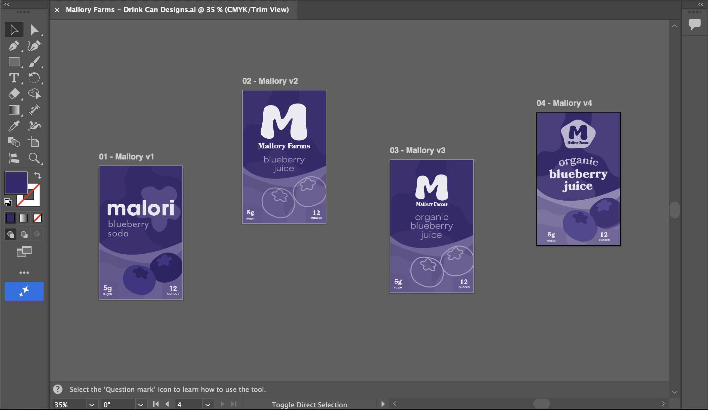
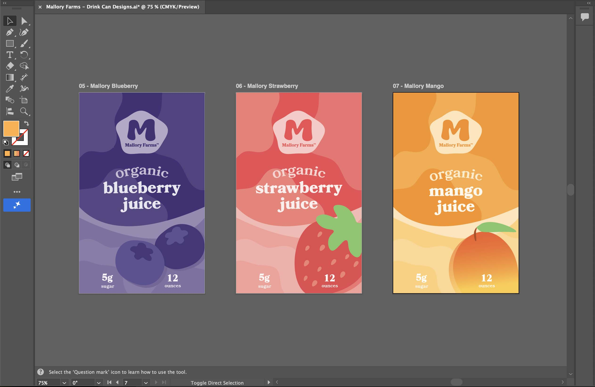
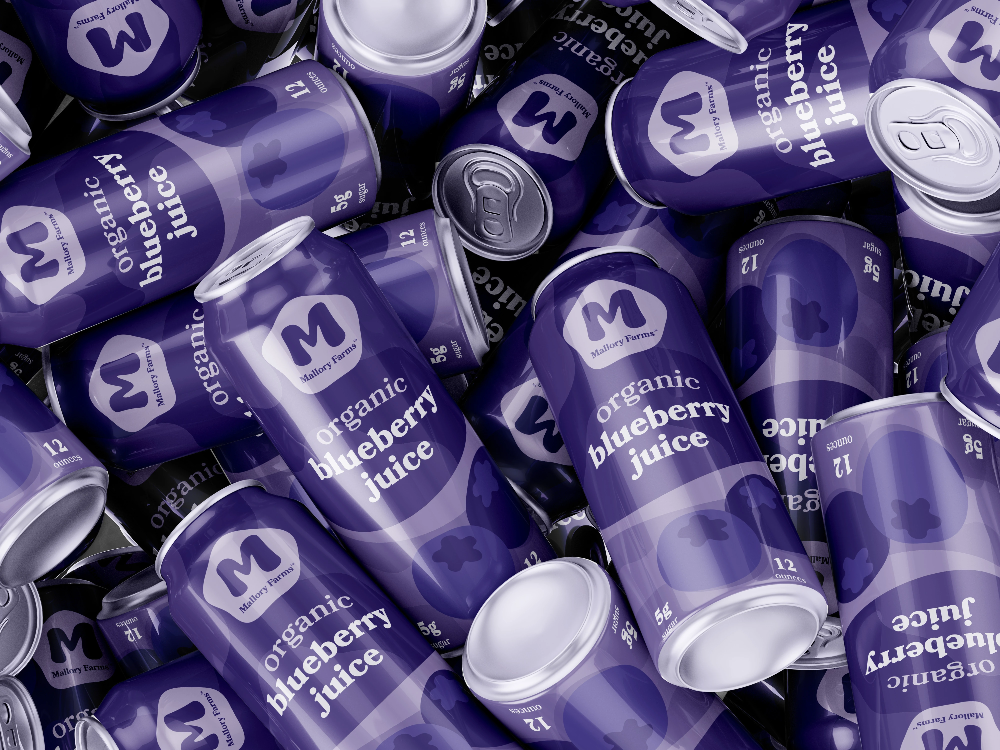
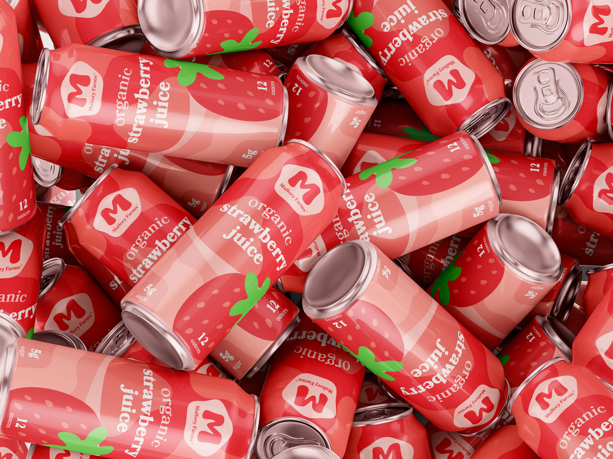
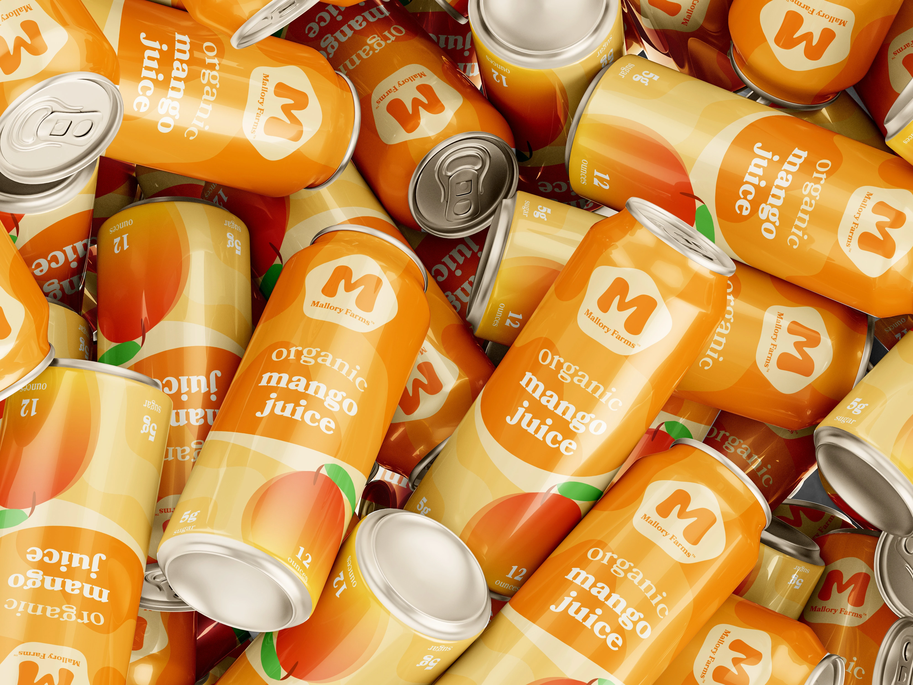
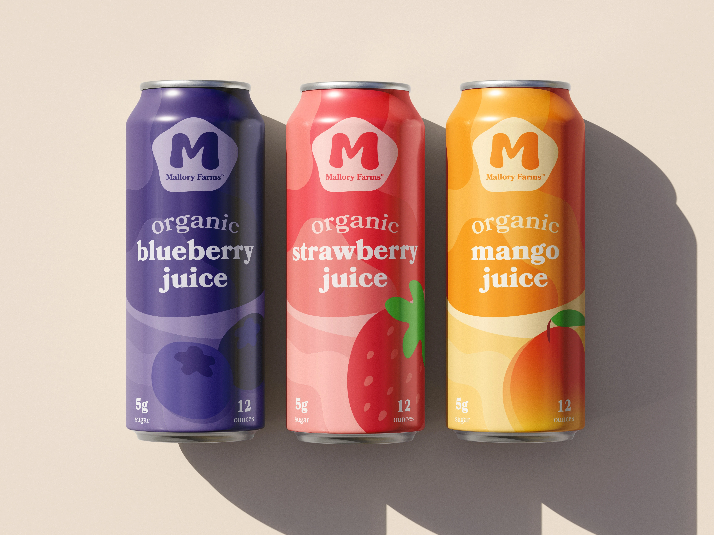
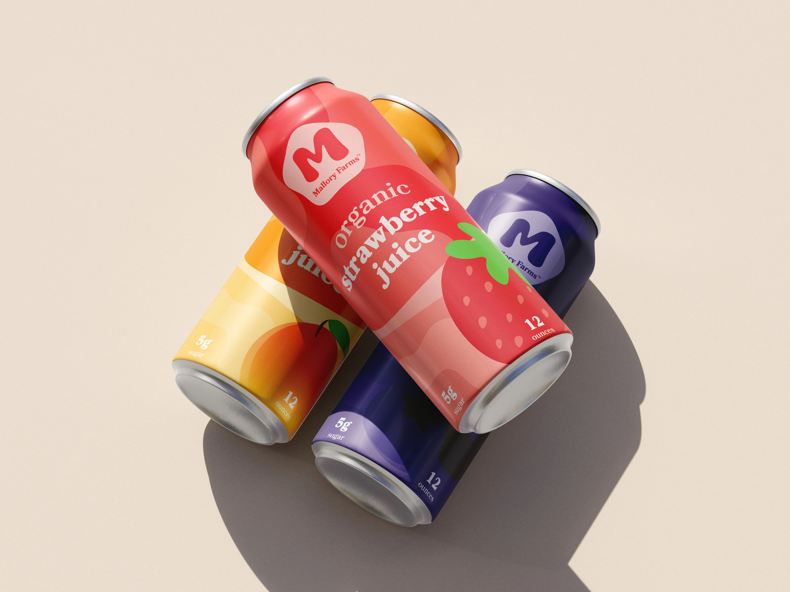
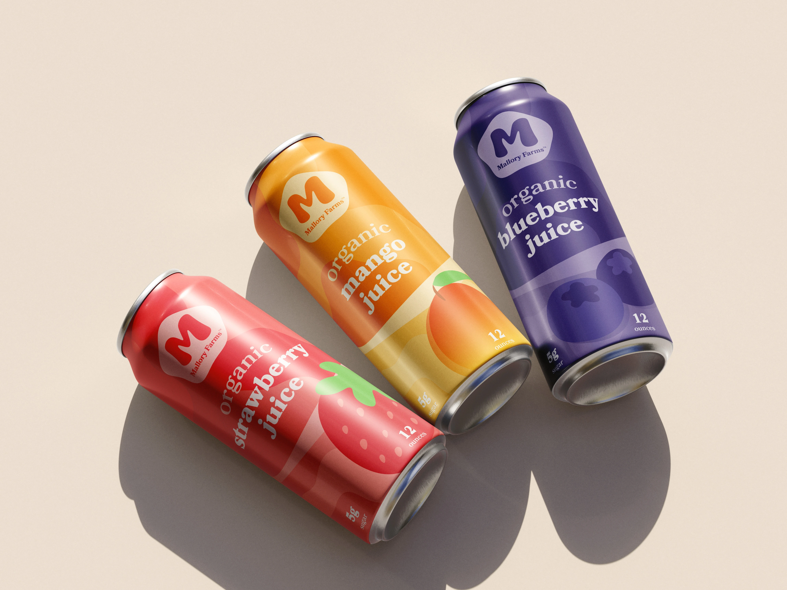

Mallory Farms
Drink Can Designs
Initially, this was a typography project consisting of one can design for the fictional drink company Mallory Farms, but I decided to expand the scope of the project to include multiple flavors.
type:
Student Project
deliverable:
Drink Can Design
software:
Illustrator, Photoshop
skills:
Graphic Design, Typography
challenge
The challenge of this project was creating packaging that felt cohesive as a product line while still giving each flavor its own distinct visual identity with an emphasis on typography.
solution
The name Mallory Farms comes from a real blueberry farm in Valdosta, Georgia near where I grew up, and it served as the inspiration for much of my fictional fruit juice brand, especially in how I attempted to marry this family-owned berry farm with more contemporary visual stylings.
I built the packaging around bold and lively typography that give the Mallory Farms brand a consistent and unique personality. The bold, bubbly serif type used for each flavor was chosen to represent a sort of modern sleekness as well as a somewhat traditional feel.
I also established a clear hierarchy between the Mallory Farms logo, the flavor name, and the smaller nutritional information. The oversized flavor typography works to allow the type to become part of the illustration and composition rather than functioning as supporting information to the illustrative work.
Design Iteration

Logo Exploration
Brand Colors

Final Design + Extra Flavors






